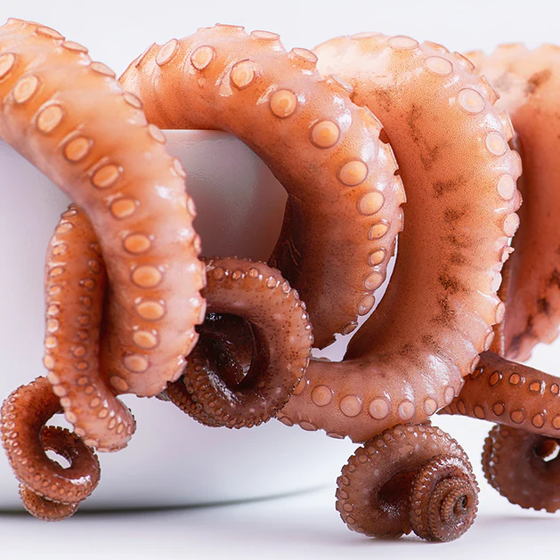
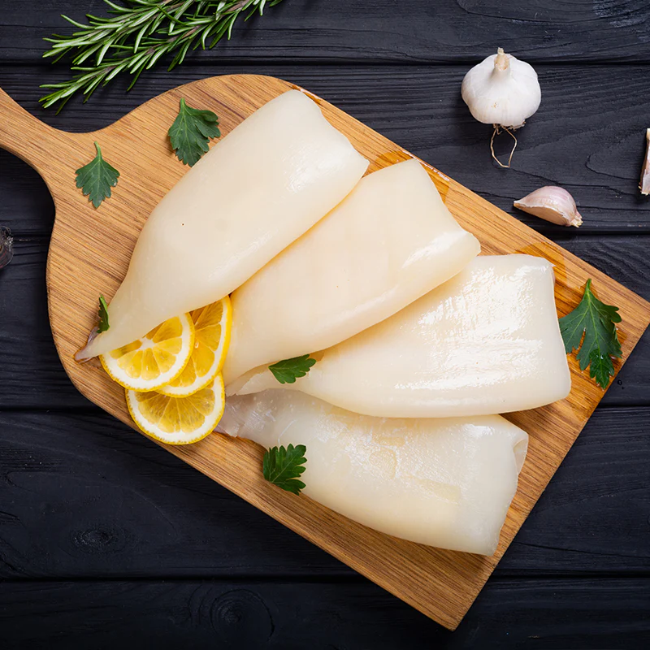
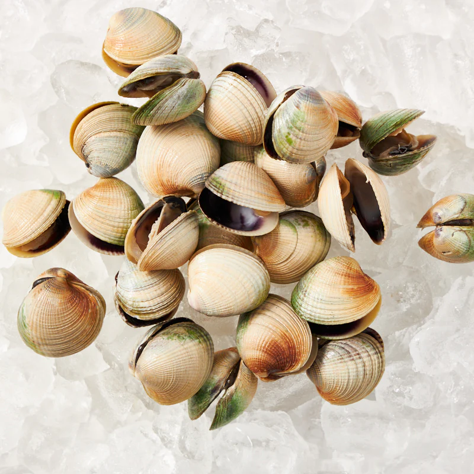
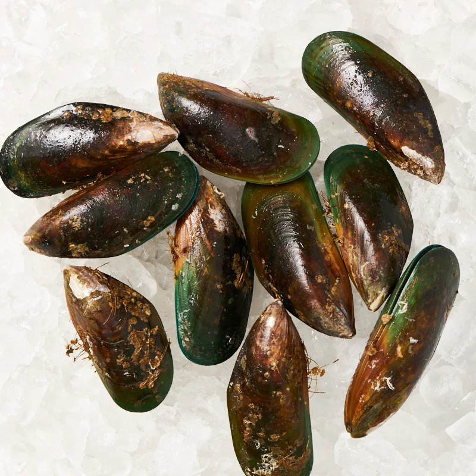
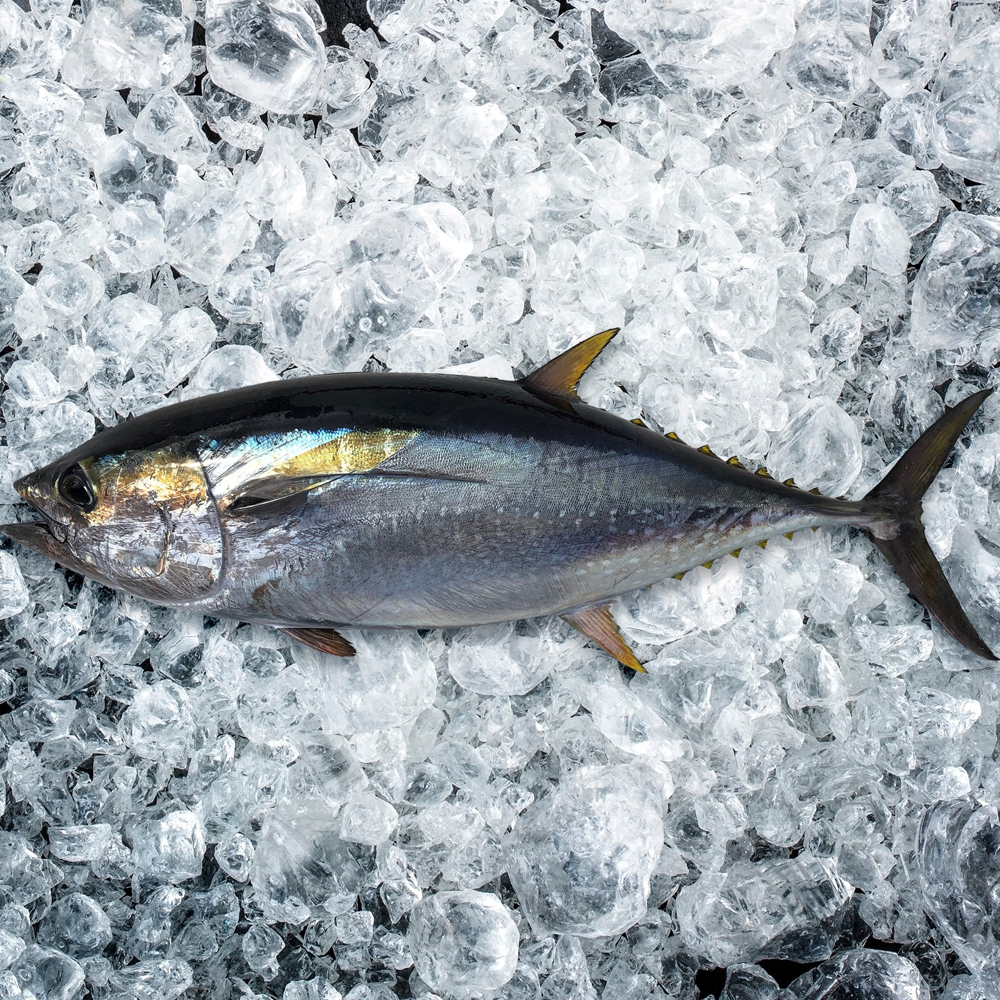
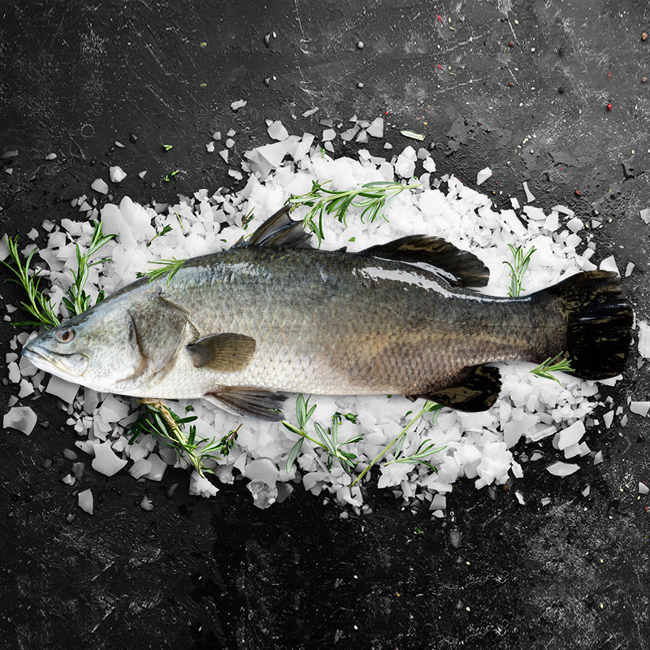
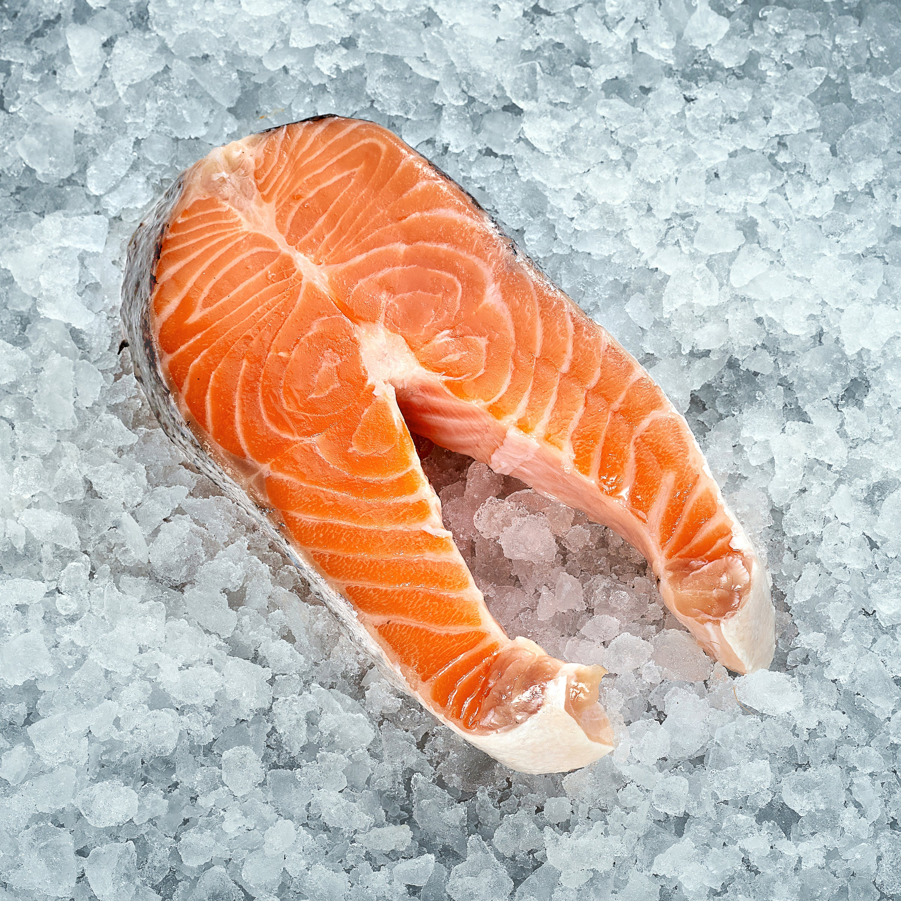
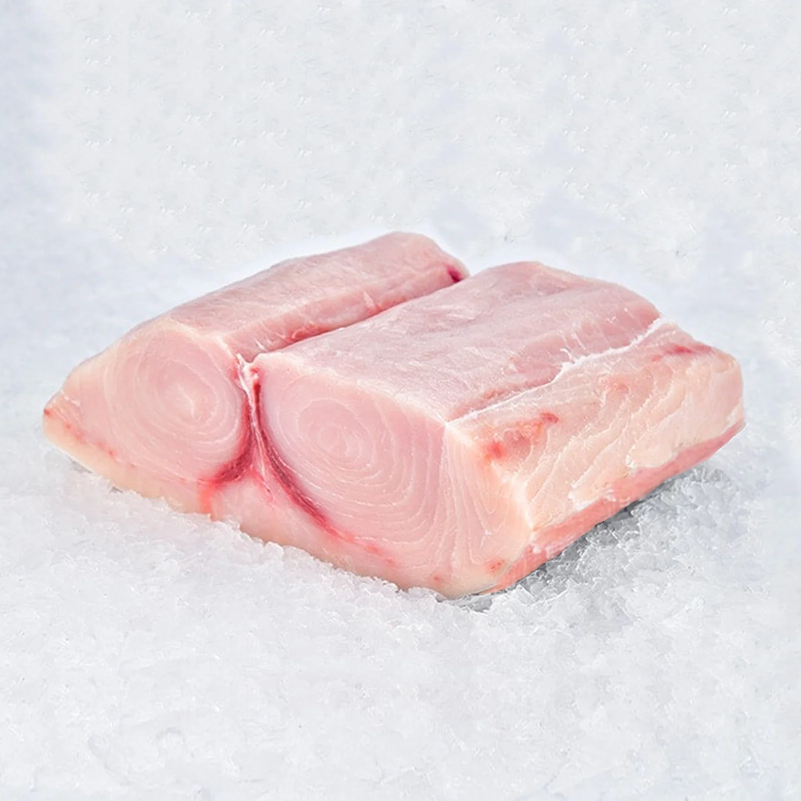

Delight Sea Food

Octopus
We provide you with the world's greatest octopus! Because of its
power and provenance, the best chefs prize Fremantle octopus.
Sourced from the clean blue waters of Western Australia’s coast.
You'll fall in love with the first bite! Each mouthful is a
monument to the power of flavour. Each symphony is a delightful
moment of harmony.
It's simple to deal with and has already been
tenderized
thanks
to a special freezing method. When you grill it, the smoky aroma
transports you to a beachside bonfire, the sound of the ocean
rhythmically thrumming nearby. For more ideas on how to cook
octopus see our Octopus Recipes.
Price
: Rs.700/-
Net
: 1 KG with frozen condition 50:50 ratio
Product
: Import

Squid
Squid meat is firm and white with a mild, slightly sweet, almost
nutty flavour. Although the tentacles are edible and often
included on a plate of fried calamari, the body is the prime
section of meat; it can be stuffed whole, cut into flat pieces,
or sliced crosswise into rings. Our squid tubes come cleaned and
without any parts that you won't use.
Squid lends itself to hot and fast cooking methods
such as grilling, broiling, sautéing, and deep-frying. Or try a
low and slow-braised squid in white wine and garlic sauce. Also
great for curries! For more ideas on how to cook squids see our
Squid Recipes.
Price
: Rs.700/-
Net
: 1 KG with frozen condition 50:50 ratio
Product
: Import

Clams
New Zealand Littleneck Clam is also known as Tuaki or Tuangi.
They are harvested from the clear, unpolluted waters of our
Southern Pacific Ocean, on the Otago coast. Otago is a region in
New Zealand located in the southern half of the South Island.
These little wonders are easily recognized by
their distinctive coloured shells which can be white, green, or
brown to grey. They are usually about one and a half inches
wide. Their nice, salty taste can be eaten raw or cooked. To
shuck them, just insert the tip of a knife between the
clamshells. Press into the clam, right into the muscle.
Price
: Rs.700/-
Net
: 1 KG with frozen condition 50:50 ratio
Product
: Import

Mussels
Green-shelled mussels are popular among many cuisine styles.
This shellfish has plump and firm (almost chewy) meat and is
characterized as having a slightly salty sea spray taste that is
not too overpowering. Famous as a sustainable green-food source,
New Zealand is undeniably the trusted provider of our
green-shelled mussels.
New Zealand mussels have a very distinct green lip
along the margin and are a good source of chondroitin sulphate
and glucosamine that helps cartilage repair and improves joint
support. They are usually enjoyed cooked with wine, garlic, or
black beans..
Known for their numerous health benefits especially for
arthritis, these molluscs not only offer you a satisfying dish
but also a nutritional addition to your regular diet. Make sure
not to overcook mussels. Once defrosted they cook within just 3
to 5 minutes to make a quick and convenient yet tasty meal!
Green Lip Mussels. For more ideas on how to cook mussels see our
Mussel Recipes.
Price
: Rs.700/-
Net
: 1 KG with frozen condition 50:50 ratio
Product
: Import

Tuna
Fishermen in the Eastern and Western Tuna and Billfish Fisheries
pursue yellowfin tuna as a target species. Yellowfin tuna are
caught off the east and west coasts of Australia. Off the shores
of Victoria, New South Wales, and Queensland are also popular
locations for recreational yellowfin tuna fishing.
The flavour of baby yellowfin tuna is medium-mild,
and its texture is very firm. It has greater flavour than
Albacore but less flavour than Bigeye when compared to other
tunas. The raw flesh, which is dark crimson, is frequently used
for sashimi.
Delicious baby yellowfin tuna fits itself well to grilled or
searing cooking techniques. It tastes best when prepared rare to
medium-rare, as sushi, or as sashimi.
Price
: Rs.2500/-
Net
: 1 KG with frozen condition 50:50 ratio
Product
: Import

King Fish
Barramundi (or Asian sea bass) are touted as the “it” fish,
especially for Australians, for its flavour and health benefits.
Caught in Humpty Doo which is home to Australia's largest
producer of saltwater barramundi, this seafood has a mild,
buttery flavour that’s complemented by a meaty texture, easily
making itself appealing to anyone’s taste buds! Barramundi
Fillets are low in fat, which makes them easy to cook as well
and have the potential to prevent cancer because of the omega-3
fatty acids that they are rich in.
Barramundi is available all year round. Foodies
and chefs alike love cooking these fillets because it’s
impossible to overcook them and they don’t give off a strong
smell. When it comes to serving them, Barramundis are versatile
enough that they are great steamed, baked, fried, or grilled.
Price
: Rs.1000/-
Net
: 1 KG with frozen condition 50:50 ratio
Product
: Import

Salmon
Our Tasmanian salmon is fully sustainable and has been
recognised by the RSPCA. Our salmon is sashimi grade and is
delivered fresh to your door.
Cutlets are thicker than fillets and, as a result,
are less likely to come apart while cooking, particularly on the
grill. Fish cooked "on the bone" is thought to be more
flavourful than boneless choices. Don't forget about the
nutritional benefits of eating fresh fish on a daily basis, such
as a high dose of excellent omega-3 fatty acids found in our
Australian salmon. See our Salmon Recipe for more ideas on how
to cook salmon.
Price
: Rs.2500/-
Net
: 1 KG with frozen condition 50:50 ratio
Product
: Import

Swordfish
The Swordfish is a little fatty. While not as rich and oily as
bluefin tuna, it has a flavour that is comparable to salmon and
mako shark. If you dislike the excessive ocean flavour,
swordfish is a fantastic option for you because it doesn't have
a distinct fishy flavour.
The flesh of swordfish is white or pinkish-orange
when it is raw. It has a mild, slightly sweet flavour that
changes to beige when cooked. As a result of their rich, moist
texture, they are sometimes compared to beef steak.
Price
: Rs.4500/-
Net
: 1 KG with frozen condition 50:50 ratio
Product
: Import